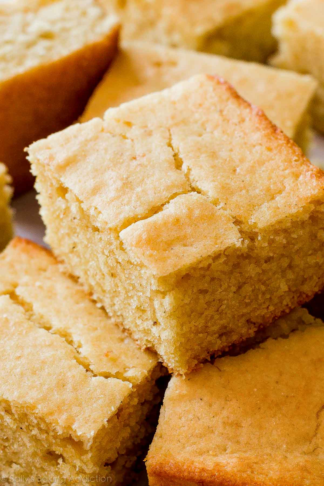

Cornbread Recipe

Description
This recipe is for thick squares of buttery moist cornbread with a touch of sweetness, and just the right amount of crumbliness.
Ingredients
- 1 cup (120g) of fine cornmeal
- 1 cup (125g) of all purpose flour
- 1 teaspoon of baking powder
- 1/2 teaspoon of baking soda
- 1/8 teaspoon of salt
- 1/2 cup (113g) of unsalted butter, malted and slightly cooled
- 1/3 cup (67g) of packed light or dark brown sugar
- 2 tablespoons (30ml) of honey
- 1 large egg at room temperature
- 1 cup (240ml) of buttermilk at room temperature
Steps
- Preheat oven to 400°F (204°C). Grease and lightly flour a 9-inch square baking pan. Set aside.
- Whisk the cornmeal, flour, baking powder, baking soda, and salt together in a large bowl. Set aside. In a medium bowl, whisk the melted butter, brown sugar, and honey together until completely smooth and thick. Then, whisk in the egg until combined. Finally, whisk in the buttermilk. Pour the wet ingredients into the dry ingredients and whisk until combined. Avoid over-mixing.
- Pour batter into prepared baking pan. Bake for 20 minutes or until golden brown on top and the center is cooked through. Use a toothpick to test. Edges should be crispy at this point. Allow to slightly cool before slicing and serving. Serve cornbread with butter, honey, jam, or whatever you like.
- Wrap leftovers up tightly and store at room temperature for up to 1 week.